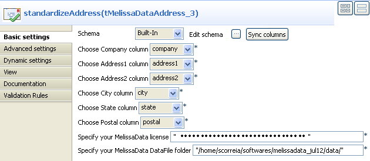
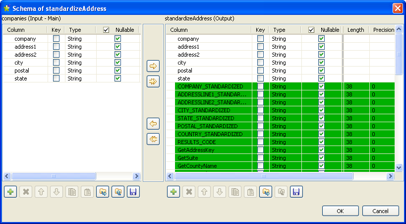

Warning
This component will be available in the Palette of the studio on the condition that you have subscribed to any Talend Platform product.
This address management component is the result of Talend collaboration with Melissa Data, one of the world leaders for global address validation.
For more information about the enterprise and its software tools, visit http://www.melissadata.com/.
|
Component family |
Data Quality | |
|
Function |
tMelissaDataAddress validates, corrects and standardizes Canadian and United States addresses. It iterates on each row and reads all input addresses against a MelissaData Data file. NotetMelissaDataAddress uses the July 2012 release of the MelissaData AddressObject library. | |
|
Purpose |
tMelissaDataAddress verifies that an address is a properly formatted address and corrects any formatting or spelling errors in each row. | |
|
Basic settings |
Schema and Edit schema |
A schema is a row description, i.e., it defines the number of fields that will be processed and passed on to the next component. The schema is either built-in or remote in the Repository. |
|
|
|
Built-in: You create the schema and store it locally for this component only. Related topic: see Talend Data Integration Studio User Guide. |
|
|
|
Repository: You have already created the schema and stored it in the Repository. You can reuse it in various projects and job designs. Related topic: see Talend Data Integration Studio User Guide. |
|
|
Choose Company column |
Select from the list the company name you want to analyze. |
|
|
Choose Address1 column |
Select from the list the first address column you want to analyze. |
|
|
Choose Address2 column |
Select from the list the second address column you want to analyze. |
|
|
Choose City column |
Select from the list the city column you want to analyze. |
|
|
Choose State column |
Select from the list the state column you want to analyze. |
|
|
Choose Postal column |
Select from the list the postal code column you want to analyze. |
|
|
Specify your MelissaData license |
Enter the MelissaData license key provided by MelissaData when you order the Data Quality Suite or the Address Object API. This software key unlocks the full functionality of Address Object. For more information, visit http://www.melissadata.com/ and download the Reference Guide for Address Object from the Support Center of MelissaData. |
|
|
Specify your MelissaData DataFile folder |
Set the path to the MelissaData Data folder provided by MelissaData and installed locally. NoteBefore being able to use the tMelissaDataAddress component, you must order and download the Data Quality Suite or the Address Object API from http://www.melissadata.com/. tMelissaDataAddress uses the July 2012 release of the MelissaData AddressObject library. |
|
Advanced settings |
tStatCatcher Statistics |
Select this check box to collect log data at the component level. |
|
Usage |
This component is an intermediary step. It requires an input flow as well as an output. | |
|
Limitation |
n/a | |
This scenario describes a three-component Job that:
uses the tFixedFlowInput component to generate the address data to be analyzed,
uses the tMelissaDataAddress component to analyze the input schema and validate, correct and standardize the US addresses generated by the tFixedFlowInput component,
uses a tLogRow component to output the correct formatted addresses on the console.

Drop the following components from the Palette onto the design workspace: tFixedFlowInput, tMelissaDataAddress and tLogRow.
Connect the three components together using the Main links.
Double-click tFixedFlowInput to open its Basic settings view in the Component tab.

Create the schema through the Edit Schema button.

Click the plus button to add the following columns to your input schema: company, address1, address2, city, postal and state. These columns are mandatory for the tMelissaDataAddress component.
Click OK.
In the Number of rows field, set the number of rows as 1.
In the Mode area, select the Use Inline Content (delimited file) option, and set the row and field separators in the corresponding fields.
In the Content table, enter the address data you want to analyze, for example:
Talend Inc.|5150 El Camino Real|Suite C-31 |Los Altos |94022| Talend Inc.|6 Executive Circle|Suite 200|Irvine California |92614| Talend Inc.|220 White Plains Road|Suite 390|Tarrytown New York |10591| Talend Inc.|8 New England Executive Park|Suite 170|Burlington Massachusetts |01803|
Double-click tMelissaDataAddress to display the Basic settings view and define the component properties.
Click Sync columns to retrieve the schema from the preceding component.
Click the Edit schema button to view the input and output schema and do any modifications in the output schema, if necessary.
In the output schema of this component there are many output standard columns that are read-only. These output columns return for example the standard company and city names, up to two street address lines, two-letter abbreviation for the state and country names, the postal zip code and the results codes.
Click OK to close the dialog box.
In each of the address detail fields, select from the list the column that holds the corresponding address detail; that is the company name, the first and second addresses, the city and state names and finally the postal code.
In the Specify your MelissaData license field, set your license key provided by MelissaData when you order the Data Quality Suite or the Address Object API.
In the Specify your MelissaData DataFile folder field, set the path to the MelissaData data folder provided by MelissaData and installed locally.
Double-click the tLogRow component to display the Basic settings view and define the component properties.
Save your Job and press F6 to execute it.
The tMelissaDataAddress reads the input address rows, corrects and formats the addresses and gives the result in a kind of "standardized" address output rows.

In addition to verifying and standardizing an address, tMelissaDataAddress will also match street names against a zip code, match geographic data to zip code and city information and finally parse street addresses and return all these results via different output columns. The above capture shows only some of the output columns written by the tMelissaDataAddress component.
These output columns return for example the standard company and city names, up to two street address lines, two-letter abbreviation for the state and country names and the postal zip code.
They also return some result code. These codes are written in comma-delimited lists. Each code consists of two letters followed by two numbers. These codes indicate different statuses and errors. For example, the AC02 code means that the state name is corrected based on the combination of city name and zip code, and the AS01 code means that the street address is valid and deliverable.
For a complete list of the meaning of the result codes and for further information about all the output columns, see the Address Object Reference Guide you can download from the Support Center of MelissaData athttp://www.melissadata.com/.